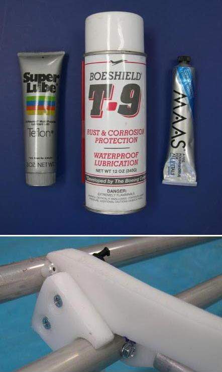

| Frame Maintenance (1 of 4) | Menu Last Page Next Page |
|  |
Aluminum and HDPE require no finishing so maintenance is
limited to cleaning, polishing and lubrication.
Aluminum Tubing Maintenance Cleaning - Wipe down the tubes with fresh water periodically. When used in a salt water environment, disassemble the frame every couple of weeks, wipe down the tubes / insets and rinse the inside of the tubes. Lubrication - The inserts should be lubricated when the tubes are cleaned. Boeshield T-9 provides excellent corrosion resistance. Teflon Super Lube can also be used for this purpose. Polishing - 6063 -T832 tubing has a polished finish and may not require restoring. 6061-T6 tubing has a dull finish and will become discolored over time. To restore the finish, MAAS metal polish is applied with a cloth. Read the instructions for the above products before using. HDPE Maintenance HDPE maintenance is limited to wiping down the plastic periodically to remove dirt and grime. If a cutout becomes loose, a small section of HDPE can be drilled and screwed over the existing cutout. The next page describes this simple process in more detail. |